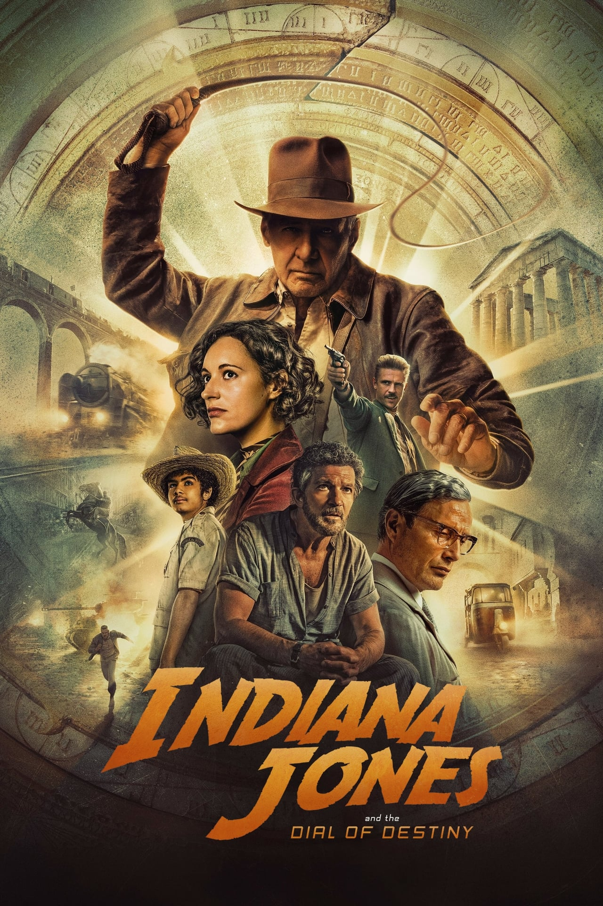

Indiana Jones and the Dial of Destiny
7
Overview
Finding himself in a new era, and approaching retirement, Indy wrestles with fitting into a world that seems to have outgrown him. But as the tentacles of an all-too-familiar evil return in the form of an old rival, Indy must don his hat and pick up his whip once more to make sure an ancient and powerful artifact doesn't fall into the wrong hands.